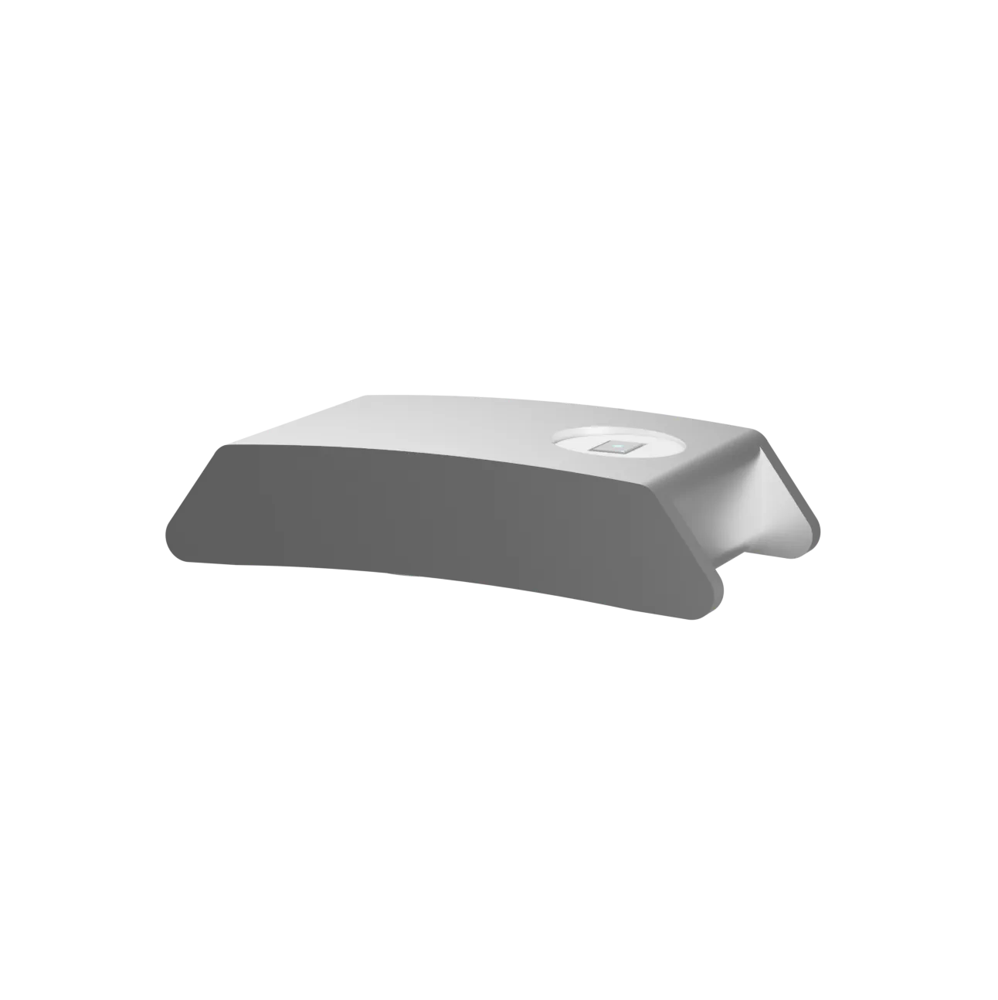
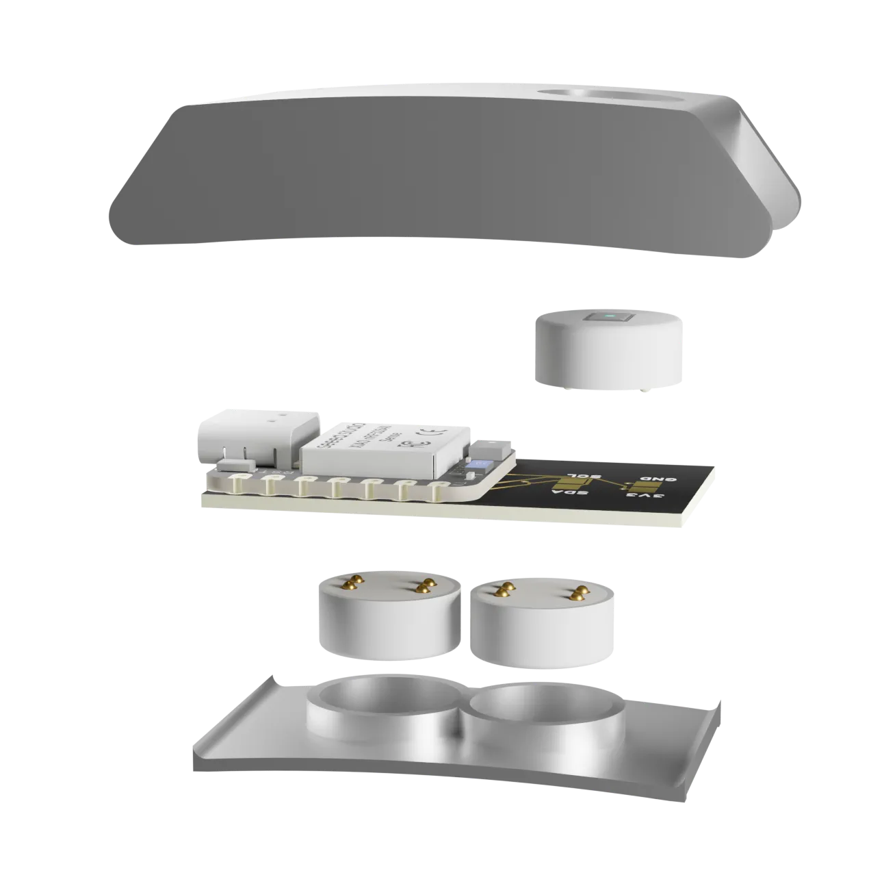

Human Signals Kit
Body-data experiences for partner platforms.
Skin-facing module directions for research, fitness platforms, biofeedback-adjacent experiences and corporate wellness workflows.
Configurable sensor hardware, open data access and flexible integration, built around replaceable sensor pucks.
OpenPulse links a reusable base, replaceable pucks and a partner-controlled data path. The product logic is not one sealed sensor stack. It is a configurable hardware and integration layer.
These are candidate directions for conversations with partners. They show how one hardware foundation can point toward different sensing, data and integration needs without pretending the pucks are already validated products.


Skin-facing module directions for research, fitness platforms, biofeedback-adjacent experiences and corporate wellness workflows.
Environment-facing module directions for workplace, heat, air-quality or context-aware applications, without making finished safety claims.
A secondary path for developers, research teams and quantified-self users who care about transparent data and room to experiment.
What needs to be sensed, in what context, by whom, and how often?
Output: sensor/data briefSkin-facing, environment-facing or a custom puck concept around the partner need.
Output: puck directionDefine export, API, dashboard or integration requirements before pretending the hardware is finished.
Output: integration pathPrototype, test signal quality, verify mechanical fit and decide whether a pilot makes sense.
Output: validation decisionOpenPulse is an early-stage platform with a working main PCB and sensor-puck hardware in active development.
Read the hardware statusThe platform thesis - modular, open, data-sovereign biosensing - has been shaped through early concept work and competitions.
The reusable core works: compute, wireless, power management and the module interface are up and running.
Puck boards and parts exist. Next up: assembly, reflow and bring-up of the first sensing modules.
Validating signal quality and building the open data path from puck to partner system.
Looking for partners with concrete use cases and clear sensor or data requirements to shape the platform.
Let's explore whether OpenPulse can become the hardware layer for your product.
Talk to the founders